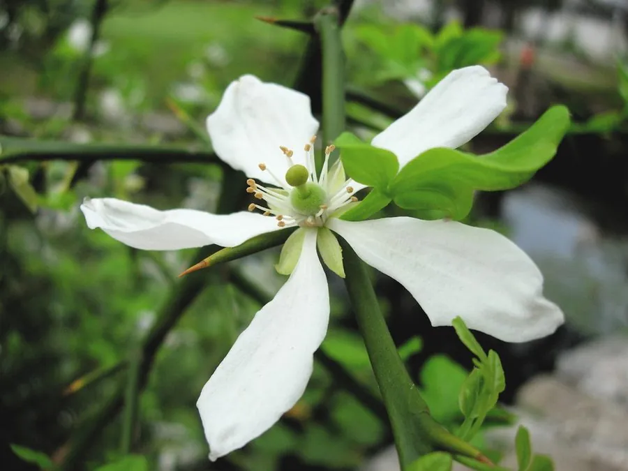

农作物与经济植物 · 植物界
柠檬 Citrus limon

柠檬是芸香科常绿小乔木，果实黄色、酸味浓郁，富含维生素 C，可鲜食、调味和加工饮料，是热带与亚热带重要果树。
- 分类
- 门被子植物门纲双子叶植物纲目芸香目科芸香科属柑橘属
- 栖息环境
- 热带与亚热带丘陵，喜温暖光照，不耐寒
- 地理分布
- 原产印度东北部与缅甸，现栽培于地中海、美洲与中国南方
- 保护级别
- 暂无评估（栽培作物）
物种志
柠檬是芸香科常绿小乔木，株高 3–6 m，枝条有刺，嫩枝与花芽常带紫红色。叶片椭圆形，边缘有细锯齿，叶柄有窄翼，揉碎后有柑橘香气。花瓣白色，外侧带紫红，芳香。果实为柑果，椭圆形或卵形，果皮黄色，表面有油胞，果肉淡黄，汁多味酸，内含数粒种子。
柠檬原产印度东北部与缅甸一带，由香橼与酸橙杂交而来，后传入地中海地区和美洲。它喜温暖、光照充足，不耐寒，适宜在排水良好的沙壤土生长。果实成熟期因产区而异，可周年供应。柠檬酸味强，多用于调味、制汁、提取柠檬油，也可切片泡水或制作果酱。中国四川安岳、云南德宏等地是主要产区，柠檬富含维生素 C，常用来泡水或佐餐。
形态与习性
- 株高3–6 m，常绿小乔木
- 枝条有刺，嫩枝带紫红色
- 果实黄色柑果，汁多味酸
- 香气果皮富含柠檬油
- 用途调味、制汁与柠檬油
- 主要产区四川安岳、云南德宏等地
趣味知识
- 柠檬的酸味主要来自柠檬酸，果皮油胞富含芳香油。
- 柠檬由香橼与酸橙杂交而来，并非野生原种。
- 柠檬不耐寒，霜冻地区需要保护越冬。